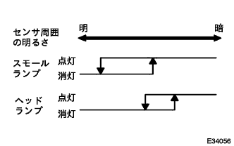

Lighting System Function Inspection |
| 1. Before Troubleshooting |
Basic Inspection
Using SST (Toyota electrical tester), inspect the battery voltage.
Inspect areas that can be checked visually, such as burnt-out light bulbs, blown fuses, open or short circuits in wire harnesses, and poor connector contact.
| 2. Inspect Headlight Automatic Leveling |
With the IG ON, the headlight dimmer switch assembly in the HEAD position and the vehicle stopped, change the vehicle posture. Check that the reflector moves when that state is held for 3 seconds or more.
| 3. Illuminated Entry System Operation Inspection |
Check that, when any door is unlocked with the IG OFF and all doors closed and locked, the relevant lights come on (for approximately 15 seconds) and then go off. (*1)
Check that, when any door is opened and then closed with the IG OFF and all doors closed, the relevant lights come on (for approximately 15 seconds) and then go off.
Check that, when the IG is turned OFF from ACC ON or IG ON with all doors closed, the relevant lights come on (for approximately 15 seconds) and then go off. (*2)
Check that, in condition (*1) or (*2), the lights stay on when any door is opened before the relevant lights go off. Also check that the lights go off approximately 15 seconds after all doors are then closed.
Check that, with the IG OFF and the relevant lights under timer control (on for approximately 15 seconds), the lights go off when all doors are closed and locked, or when ACC ON or IG ON.
| 4. Inspect Interior Illumination Light Assembly No.1 |
Check that, when any door is opened and then closed with the IG OFF and all doors closed, the relevant lights come on (for approximately 15 seconds) and then go off.
Check that the relevant light comes on dimmed (medium brightness) when the IG is ON and the shift lever is in the P position. (*3)
Check that, when the shift lever is moved from the P position to any other position with the IG ON and the headlight dimmer switch assembly in the TAIL position, the relevant light comes on dimmed (low brightness), dimmer than in (*3). (*4)
Check that the relevant light goes off when the headlight dimmer switch assembly is turned OFF in condition (*4).
Check that the relevant light comes on dimmed (medium brightness) when the shift lever is moved from any position other than P to the P position with the IG ON. (*5)
Check that the relevant light comes on when the engine is stopped [ACC ON position] from condition (*5). (*6)
Check that the relevant light goes off approximately 15 seconds after the IG is turned OFF from condition (*6).
| 5. Automatic Light Control AUTO Operation Inspection |
Turn IG ON.
Turn the light control switch to AUTO.
 |
Gradually cover the top of the automatic light control sensor with something that does not let light through, and check that the lights come on automatically.
After the lights have come on automatically, gradually uncover the top of the automatic light control sensor and check that the lights go off automatically.
| 6. Automatic Light Control Off/On Inspection |
Darken the area around the automatic light control sensor to make the lights come on automatically.
Check that the lights go off under any of the following conditions.
Turn the light control switch OFF.
Brighten the area around the automatic light control sensor.
Open the driver side door with the IG OFF.
Darken the area around the automatic light control sensor to make the lights come on automatically.
Open the driver side door with the IG OFF to turn the lights off.
Check that the lights come on again when the IG is turned ON.
| 7. Inspect Light Auto Cut System |
Turn the IG ON with the driver side door closed.
Turn the light control switch to TAIL, HEAD or AUTO to turn the lights on.
Check that the headlights and taillights go off when the IG is turned OFF and the driver side door is opened.
| 8. Inspect Headlight Light Control Computer Assembly |
If the headlight light control computer assembly has no external damage, or if it has received an impact but lights normally, perform a lighting diagnosis using the following method. If all items are normal as a result of the diagnosis, it can be reused.
Perform a cold start (lighting after being off for 10 minutes or more) and a hot start (on for 15 minutes or more → off for 1 minutes → relit) several times, and check that the light comes on reliably.
Monitor the lighting condition for approximately 5 minutes from immediately after a cold start until it becomes stable, and check that there is no unstable condition such as flickering.
With bulbs of similar service time installed, turn on the left and right headlights for approximately 30 seconds. Check that there is no obvious difference in brightness between the left and right headlights and that the lighting condition is stable.
| 9. Inspect Battery Saver |
Check that, with any door ajar and the IG OFF, the lights illuminated by the illuminated entry system go off after approximately 20 minutes.